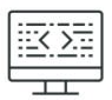

Ik zou mezelf omschrijven als een hands-on manager met veel kennis van een breed scala aan onderwerpen. Ik ben altijd op zoek naar nieuwe kennis om mijn ervaring aan te kunnen vullen met de techniek die hier bij hoort. Dit doe ik naast mijn werkzaamheden waardoor ik nieuwe kennis direct toe kan passen op de plek waar die kennis nodig is.
| Functie | Organisatie | Periode | Locatie | Beschrijving | |
|---|---|---|---|---|---|
| Sales Representative | Stiion · Freelance | Jan 2024 - Present · 7 mos | Netherlands · Remote |
Ik richt me voor Stiion op de verkoop van de software DNR-Q. Mijn focus ligt op het aantrekken van nieuwe klanten. Deze software-applicatie stelt je in staat om snel en doelmatig te werken met Standaardtaakbeschrijvingen (STB) op basis van De Nieuwe Regeling (DNR) en deze projectspecifiek toe te passen. Met de komst van de nieuwe omgevingswet zijn DNR en STB nog relevanter voor de praktijk geworden.
Voor alle adviseurs in de bouw. DNR is bedoeld voor alle bouwadviseurs die actief zijn op het gebied van ontwerp, advies en beheer. Alhoewel de rollen van de adviseurs binnen een proces van elkaar verschillen wordt de rechtsverhouding tussen adviseur en opdrachtgever in DNR zonder dit onderscheid omschreven. Wat zijn de wederzijdse rechten en plichten. In de STB wordt middels een kruisjeslijst per discipline invulling gegeven aan de te verrichten taken. |
|
| Verkoop- en marketingspecialist | Jos van den Berg Fotografie · Freelance | Apr 2023 - Present · 1 yr 4 mos | Huizen, Noord-Holland, Nederland · Hybrid |
Voor Jos van den Berg heb ik de website gemaakt in Wordpress, online campagnes bedacht en nieuwe kansen gezocht om het werk ook offline zichtbaar te maken. Zowel in de gedachten vorming als in de uitvoering werk ik samen met Jos aan zijn bekendheid als fotograaf.
Skills: Social Media Marketing · Offline marketing · Website opbouwen · Website-promotie · Projectcoördinatie |
|
| Schilder/decorateur | Self-employed | Sep 2002 - Present · 21 yrs 11 mos | Maarssen, Utrecht, Nederland · Hybrid |
Kunstenaar schilder decorateur.
Skills: Schilderen · Kunst · Beeldende kunst · Decoratieschilder · Photoshop · Canva · Illustrator · Project Management · Project Planning · Projectcoördinatie · Marketing · Online Marketing · Offline marketing · Marketing Communications · Accountmanagement · Artikelen schrijven · Art Prints uit de collectie van Martine van Lieshout: Werk aan de Muur is een online platform dat een breed scala aan kunstwerken aanbiedt, waaronder het werk van Martine van Lieshout. De werken van Martine van Lieshout, die beschikbaar zijn als prints kunt u hier moeiteloos aanschaffen. De kunstenaar ontvangt een percentage van de verkoopprijs. Klanten kunnen kiezen uit verschillende formaten en materialen om aan hun specifieke behoeften te voldoen, zoals canvasafdrukken, ingelijste prints, posters en meer. |
|
| Sales representative | OpenC · Freelance | Sep 2023 - Mar 2024 · 7 mos | Nederland · Remote |
Voor de verzekerings-software van OpenC ben ik het aanspreekpunt voor alle sales vragen. Ik begeleid klanten naar passende software oplossingen. Ik heb als salesmanager de taak het salesplan op te stellen, uit te voeren en management te informeren over de behaalde resultaten.
Skills: Softwareverkoop · Business Strategy · Accountmanagement · Sales · Sales Management OpenC: Innovatieve verzekeringssoftware |
|
| Benelux accountmanager | Claris · Part-time | Sep 2020 - Nov 2022 · 2 yrs 3 mos | Netherlands |
Skills: Klantentevredenheid · Verkooppresentaties · Relaties opbouwen · Softwareverkoop · Accountmanagement · Business planning · Directe verkopen
Claris: Begin uw digitale transformatie. Bouw apps op maat. Automatiseer workflows. Allemaal met het wereldwijd toonaangevende Werkplek Innovatie Platform. |
|
| Marketing en communicatie | Stichting Wereldweide | Oct 2014 - Jul 2017 · 2 yrs 10 mos | Utrecht Area, Netherlands | Skills: Verkooppresentaties · Communicatie | |
| Online Marketing Consultant | Van Lieshout advies · Freelance | Jun 2013 - Jul 2017 · 4 yrs 2 mos | Utrecht Area, Netherlands | Skills: Klantentevredenheid · Communicatie | |
| Bedrijfsleider | Ernes Verf en Wand VOF | Jun 2005 - Sep 2008 · 3 yrs 4 mos | 's-Hertogenbosch | All round management winkel (10 FTE), organisatieontwikkeling en inkoop. Projectleiding inrichtingsprojecten bij particulieren en bedrijven. Aansturing buitendienst. | |
| Assistent bedrijfsleider | Ernes Verf en Wand VOF | Jun 2003 - Jun 2005 · 2 yrs 1 mo | 's-Hertogenbosch | Skills: Klantentevredenheid |
| Opleiding | Instituut | Periode | Locatie | Beschrijving |
|---|---|---|---|---|
| MBO UX design | NHA | may 2024 - Present |
Je gaat leren hoe je de behoeften van gebruikers begrijpt en hoe je die kennis kunt gebruiken om gebruiksvriendelijke interfaces te maken. Je ontdekt hoe je onderzoek doet naar wat gebruikers willen, hoe je interacties ontwerpt die logisch en handig zijn en hoe je prototypes maakt om je ideeën te testen.
Skills: Figma · HTML · CSS · |
|
| MBO Ontwerp en ontwikkeling van informatiesystemen | LOI | Jan 2024 - May 2024 |
Deze opleiding richt zich op actief leren door het ontwerpen, modelleren, ontwikkelen en testen van informatiesystemen. Je verkent wat een informatiesysteem is, de verschillende typen, hun doel in besluitvormingsprocessen en de diverse methoden en technieken die worden gebruikt bij hun ontwikkeling.
Na afloop van deze opleiding heb je een stevige kennisbasis van essentiële begrippen, methodes en tools die worden toegepast in ontwikkeltrajecten. Skills: Scrum · System Testing · Data Modeling · Requirements Management · Architectural Design · Agile & Waterfall Methodologies · Building Information Modeling (BIM) · Information Architecture · Agile Methodologies · Requirements Analysis |
|
| App Developer for Claris Filemaker Pro Specialist | Claris academy | Oct 2023 - Oct 2023 |
App developer for Claris Filemaker Pro specialist.
Skills: Database Design · Relational Data Modeling · Relational Databases Claris Certificate App developer for Claris FileMaker Pro Specialist |
|
| HBO certificering, Basiskennis management | IMK Opleidingen | 2007 - 2008 |
Activities and societies: Management & Organisatie. Communicatie en leidinggeven.
Cum laude geslaagd |
|
| MBO4, Bescherming- en afwerkingstechnieken | Sint Lucas College | 1998 - 2001 |
Activities and societies: Minionderneming Nederland - Financieel directeur Shuffle & Co. Klassenvertegenwoordiger
Opleiding tot ondernemer gespecialiseerd in Bescherming en Afwerking. Deelkwalificaties voor o.m. materiaalkennis, calculatie, interieuradvisering, kleuradvies, decoratie, ondernemersvaardigheden, restauratieschilderen etc. |
|
| VCA Safety for Operational Supervisors (expires 12-2027) | Training | Dec 2017 - Dec 2027 | VGM checklist Aannemers, VCA diploma veiligheid op bouwplaatsen voor leidinggevenden. |
Ik ben Martine van Lieshout, 42 jaar oud en ben sinds 2021 in de it-sector werkzaam. Ik werk mee aan verschillende projecten die gaan over software ontwikkeling. Vanuit mijn salesrol inventariseer ik de klantvragen en vertaal deze voor kleinere ontwikkelaars in uitvoerbare ontwikkelprojecten. Omdat ik met binnen het MKB werkzaam ben is het handig om op verschillende plekken te kunnen functioneren bij nieuwe klantvragen. Daarom ontwikkel ik mijn kennis door middel van opleidingen. Het doel is om ook in de ontwikkeling van apps een bijdrage te kunnen gaan leveren vanuit de ontwerp en ontwikkelkant.

In mijn verkoop rol ben ik op mijn best. Ik zie altijd een verkoopkans. Of het nu gaat om het uitbereiden van een lopend contract of een initiele vraag, of een heel nieuw maatwerktraject. Ik haal er uit wat er bij de klant in zit, en dat op respectvolle en charmante wijze. Ik bouw mijn eigen salesfunnel in Claris Studio en zoek mijn eigen kansen in de markt. Ik communiceer addequaat en spontaan.
In mijn bedrijf beheer ik een aantal WordPress-websites. Naast het vullen van de templates adviseer ik over online mediacampagnes en bedenk ik hoe offline marketingprojecten kunnen bijdragen aan meer exposure. Ik ontwerp en ontwikkel alle online en offline marketingproducten.